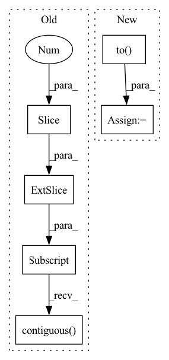

Pattern ID :18297
Before Change
outputs = model(inputs, masked_lm_labels=labels, position_ids=position_ids, token_type_ids=segment_ids)
else:
if args.model_type == "bart":
decoder_input_ids = labels[:, :-1].contiguous()
decoder_input_ids[decoder_input_ids == args.mlm_ignore_index] = tokenizer.pad_token_id
lm_labels = labels[:, 1:].clone()
outputs = model(inputs, labels=labels, lm_labels=lm_labels, decoder_input_ids=decoder_input_ids, position_ids=position_ids, token_type_ids=segment_ids)
else:After Change
inputs, labels = mask_tokens(inputs, labels, tokenizer, args.mlm_probability, args.mlm_ignore_index)
inputs = inputs.to(args.device)
labels = labels.to(args.device)
attention_mask = attention_mask.to( args.device)
position_ids = position_ids.to(args.device)
segment_ids = segment_ids.to(args.device)
with torch.no_grad():In pattern: SUPERPATTERN
Frequency: 3
Non-data size: 6
Instances Fragment ID: 59940422
Project Name: stanford-oval/genienlp
Commit Name: b84a6548a69fd9f62652eed1c74fd4b1fdb8b65b
Time: 2020-11-15
Author: mehrad@stanford.edu
File Name: genienlp/paraphrase/run_lm_finetuning.py
M Class Name: AnonimousClass
N Class Name: AnonimousClass
M Method Name: evaluate(5)
N Method Name: evaluate(5)
M Parent Class:
N Parent Class:
M File Name: genienlp/paraphrase/run_lm_finetuning.py
N File Name: genienlp/paraphrase/run_lm_finetuning.py
M Start Line: 318
M End Line: 344
N Start Line: 330
N End Line: 369
Before Change
if args.model_type in ["bart", "mbart"]:
// this should have been handled internally by huggingfaces"s BART code
// TODO remove this once they add it
decoder_input_ids = labels[:, :-1].contiguous()
decoder_input_ids[decoder_input_ids == args.mlm_ignore_index] = tokenizer.pad_token_id
lm_labels = labels[:, 1:].clone()
model_inputs["decoder_input_ids"] = decoder_input_ids
model_inputs["lm_labels"] = lm_labelsAfter Change
inputs, labels = mask_tokens(inputs, labels, tokenizer, args.mlm_probability, args.mlm_ignore_index)
inputs = inputs.to(args.device)
labels = labels.to(args.device)
attention_mask = attention_mask.to( args.device)
position_ids = position_ids.to(args.device)
segment_ids = segment_ids.to(args.device)
model.train()
Fragment ID: 59940420
Project Name: stanford-oval/genienlp
Commit Name: b84a6548a69fd9f62652eed1c74fd4b1fdb8b65b
Time: 2020-11-15
Author: mehrad@stanford.edu
File Name: genienlp/paraphrase/run_lm_finetuning.py
M Class Name: AnonimousClass
N Class Name: AnonimousClass
M Method Name: train(4)
N Method Name: train(4)
M Parent Class:
N Parent Class:
M File Name: genienlp/paraphrase/run_lm_finetuning.py
N File Name: genienlp/paraphrase/run_lm_finetuning.py
M Start Line: 182
M End Line: 207
N Start Line: 190
N End Line: 219
Before Change
)
input_ids.append(encoding_dict.input_ids)
input_ids = torch.cat(input_ids, dim=0).to(self.device)
decoder_input_ids = input_ids[:, :-1].contiguous()
labels = input_ids[:, 1:].contiguous()
perm_mask = torch.ones((input_ids.shape[0],
decoder_input_ids.shape[1],
decoder_input_ids.shape[1]),After Change
input_ids.append(encoding_dict.input_ids)
attn_masks.append(encoding_dict["attention_mask"])
input_ids = torch.cat(input_ids, dim=0).to(self.device)
attn_masks = torch.cat(attn_masks, dim=0).to( self.device)
decoder_target_ids = input_ids[:, 1:].contiguous()
perm_mask = torch.ones(input_ids.shape[0], input_ids.shape[1], input_ids.shape[1]).to(self.device) Fragment ID: 59940421
Project Name: rucaibox/textbox
Commit Name: 53c76331ad0c943d52e3310affd25d0e505eb830
Time: 2021-01-19
Author: 1020139164@qq.com
File Name: textbox/model/LM/xlnet.py
M Class Name: XLNet
N Class Name: XLNet
M Method Name: calculate_loss(4)
N Method Name: calculate_loss(3)
M Parent Class: UnconditionalGenerator
N Parent Class: UnconditionalGenerator
M File Name: textbox/model/LM/xlnet.py
N File Name: textbox/model/LM/xlnet.py
M Start Line: 90
M End Line: 113
N Start Line: 72
N End Line: 111